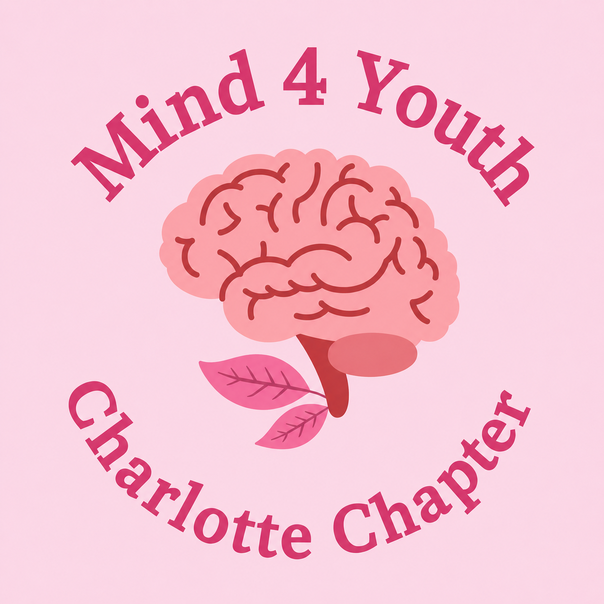

Mind4Youth · Charlotte, NC
Mental health,
out loud.
We're the Charlotte chapter of Mind4Youth, a youth-led nonprofit making mental health resources accessible for every teen — through honest conversations, student-written articles, and a community that actually gets it.

About us
A local chapter of a global movement.
Mind4Youth is one of the largest youth-led mental health nonprofits in the world. In Charlotte, we plan to bring that mission to our own schools and community by hosting conversations with mental health professionals, publishing writing by local students, and volunteering in places where support and connection are needed most.
Why We Started
We founded Mind4Youth Charlotte because we believe every young person deserves access to mental health education, support, and a community where they feel heard.
We believe mental health deserves greater attention, not only in our local community but around the world. Through our chapter, we aim to connect students with trusted resources, encourage open conversations, and empower young people to make a positive impact through service, advocacy, and leadership.
Whether you’re able to donate, write an article, volunteer at an event, or simply create an uplifting card, we’d love for you to join us in making a difference.
— The Mind4Youth Charlotte Team
Be kind, for everyone you meet is fighting a hard battle you know nothing about.
— Ian Maclaren
Chapter leadership